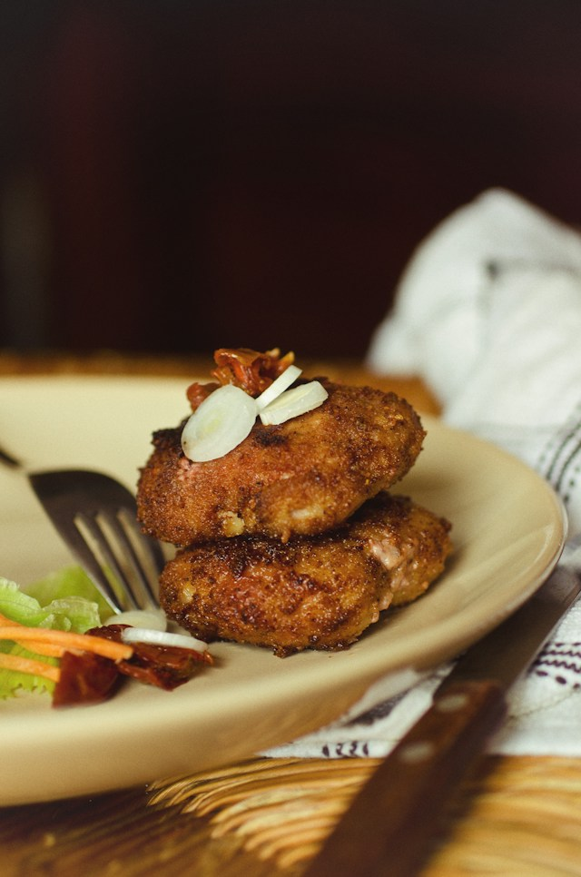

Home
Crab Cakes

Best Ever Crab Cakes
These crab cakes are easy to make and the best I've ever eaten! Serve with
coarse mustard on the plate or your favorite mustard sauce.
Ingredients
- 1 large egg
- 3 tbsp mayo
- 1 tbsp minced green onions
- 4 tsp lemon juice
- 1 tsp dried tarragon
- 1/8 tsp red pepper flakes
- 8 oz. crabmeat
- 1/2 cup crushed crackers
- 1 tbsp butter
Steps
- Gather all ingredients
-
Whisk egg, mayonnaise, green onions, lemon juice, tarragon, and pepper
flakes together in a medium bowl.
- Gently stir in crabmeat, being careful not to break up meat.
-
Gradually mix in cracker crumbs, adding until desired consistency is
achieved.
- Form crab mixture into 4 patties.
-
Heat butter in a skillet over medium heat. Cook patties in the skillet
until golden brown, 5 to 6 minutes on each side.
- Serve and enjoy!